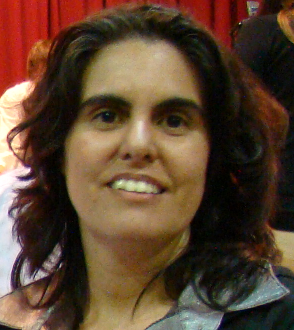

Currículum Vitae
Descripción Personal
- Nombre y Apellido: Cristina Laura Murguía Báez.
- Fecha de Nacimiento: 3 de Mayo de 1974.
- Lugar de Nacimiento: Corrientes (Cap.)
- Domicilio: Pigüé, Provincia de Buenos Aires.
- País: Argentina.
- Email: crismurbae@gmail.com.ar
Educación
- Instituto Superior particular Incorporado “Nro. 9108 Ntra. Sra. de la Misericordia
Casilda, Provincia Santa Fé.
Título de: Profesora de Primero y Segundo Ciclo de la E.G.B.
1998 - 2000
- Instituto Superior de Formación Docente N°160 – Red de Institutos.
Coronel Suarez, Provincia Buenos Aires
Certificado analítico incompleto de: Profesorado de tercer ciclo de la EGB y de la Educación Polimodal en Matemática – Resolución N°28/03 Resolución 4664/03. Porcentaje de materias aprobadas: 77,42%.
A tener en cuenta: Las materias aprobadas en los años 1998-1999 fueron otorgadas por equivalencia.
2001 - 2006
Experiencias Laborales
Area administrativa contable
-
Cooperadora de la Escuela de Educación Agropecuaria “EME”. Localidad: Goyena. Provincia: Buenos Aires.
Detalles del puesto: Confección del diario y balance anual. 1993-1997
-
Telefónica de Goyena. Localidad: Goyena. Provincia: Buenos Aires. Detalles del puesto: Confección del diario y balance anual.1996-1998
Area docente. Antigüedad Docente: 16 años
| Tipo de Organización | Nº de Escuela | Fecha Toma Posesión | Fecha de cese |
| Escuela Primaria | 19 | 11/04/2002 | 16/04/2002 |
| ESC. DE ENS. MEDIA | 1 | 05/05/2002 | 05/08/2002 |
| Escuela Primaria | 32 | 10/05/2002 | 10/05/2002 |
| ESC. DE ENS. MEDIA | 1 | 16/05/2002 | 29/05/2002 |
| ESC. DE ENS. MEDIA | 1 | 05/06/2002 | 05/08/2002 |
| Escuela Primaria | 32 | 11/06/2002 | 11/06/2002 |
| Escuela Primaria | 32 | 08/08/2002 | 28/02/2003 |
| Colegio “La Salle” | 495 | 06/08/2002 | 30/08/2002 |
| Escuela Primaria | 8 | 03/02/2003 | 14/02/2003 |
| Escuela Primaria | 15 | 28/04/2003 | 02/05/2003 |
| Escuela Primaria | 19 | 15/05/2003 | 16/05/2003 |
| E.G.B. | 3 | 26/05/2003 | 09/06/2003 |
| ESC. DE ENS. MEDIA | 1 | 04/04/2005 | 10/05/2010 |
| C. E. N. S. | 451 | 26/07/2005 | Licencia |
| ESC. DE ENS. MEDIA | 1 | 01/03/2006 | ………. |
| C. E. N. S. | 451 | 23/08/2006 | Licencia |
| ESC. DE EDUC. SECUNDARIA | 1 | 22/06/2010 | 30/11/2012 |
| C. E. N. S. (Directora) | 451 | 16/12/2011 | 21/10/2020 |
| Escuela Primaria | 1 | 04/11/2019 | Continúa |
Skills
- Profesora de Piano.
- Curso: Compel,computación electrónica
Bahía Blanca, Provincia de Buenos Aires.
Curso Aprobado de Informática y Lenguaje Basic I, 1986.
- Creación de Herramienta administración contable con FoxPro, actualizado a Visual FoxPro.
- Creación de Herramienta administración escolar para nivel secundario de adultos con Visual Basic de Microsoft, aplicado a la base de datos Acces.
- Herramientas de Microsoft: Procesador de documentos Word, base datos Acces y planilla de cálculo Excel.
- Software de diseño gráfico: Adobe Photoshop, Adobe Illustrator , Paint, Paint 3D.
- Herramienta de animación de personajes: Adobe Character Animator.
- Herramienta de Composición de video: Adobe After Effects, Wondershare Filmora.
- Herramienta de edición de sonido: Audacity.
- Armado y Reparación de PC, de escritorio y portátiles.
Foto

Hobbies
En mi tiempo libre me gusta coser, arreglar el jardín y tocar el piano.
Objetivo
Me interesó la propuesta de Henry porque puedo profundizar y aprender más de programación en el paradigma orientado a objetos. Mi objetivo es poder dedidarme a la programación para generar ingresos. Siempre me apasionó poder aprender más y dedicarme de tiempo completo a la generación de software.